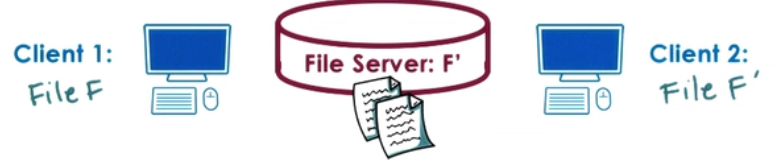

Distributed File Systems
- Accessed via well defined interface
- access via Virtual File Systems
- Focus on consistent state
- tracking state, file update, cache coherence
- Mixed distribution models possible
- replicates vs partitioned, peer-like systems
DFS models
- Client Server on different machines
- File server distributed on multiple machines
- replicated (each server : all files)
- partitioned (each server : parts of files)
- both (files partitioned, each partition replicates)
- Files stored on and served from all machines (peers)
- blurred distinction between clients and servers
Remote File Service : Extremes


- Extreme1 : Upload/Download
- like FTP, SVN
- + local read/writes at client
- - entire file download/upload evn for small accesses
- - server gives up control
- Extreme2 : True Remote File Access
- Every access to remote file, nothing done locally
- + file access centralized, easy to reason about consistency
- - every file operation pays network cost, limits server scalability
Remote File Service : A compromise
A more practical Remote File access (with Caching)
- Allow clients to store parts of files locally (blocks)
- + low latency on file operations
- + server load reduces => more scalable
- Force clients to interact with server (frequently)
- + server has insights into what clients are doing
- + server has control into which accesses can be permitted => easier to maintain consistency
- - server more complex, requires different file sharing semantics
Stateless vs Stateful File server
| Stateless | Stateful |
|---|---|
| Keeps no state; Okay with extreme models, but can't support 'practical' model | Keeps client state needed for 'practical' model to track what is cached/accessed |
| - Can't support caching and consistency management | + Can support locking, caching, incremental operations |
| - Every request self-contained. => more bits transferred | - Overheads to maintain state and consistency. Depends on caching mechanism and consistency protocol. |
| + No resources are used on server side (CPU, MM). On failure just restart | - On failure, need checkpointing and recovery mechanisms |
Caching state in a DFS
- Locally clients maintain portion of state (e.g. file blocks)
- Locally clients perform operations on cached state (e.g. open/read/write)
- requires coherent mechanisms

| System | How | When |
|---|---|---|
| SMP | Write-update/Write-invalidate | On write |
| DFS | Client/Server-driven | On demand, periodically, on open.. |
-
Files or File blocks can be (with 1 server and multiple clients) cached in:
- in client memory
- on client storage device (HDD/SDD)
- in buffer cache in memory on server
- (usefulness will depend on client load, request interleaving)
-
File Sharing Semantics in DFS
-
Session semantics (between open-close => Session)
- write-back on close(), update on open()
- easy to reason, but may be insufficient
- Periodic updates
- client writes-back periodically
- clients have a "lease" on cached data (not exclusively necessary)
- servers invalidates periodically => provides bounds on "inconsistency"
- augment with flush()/sync() API
- client writes-back periodically
- Immutable files => never modify, new files created
- Transactions => all changes atomic
Replication vs Partitioning
| Replication | Partitioning | |
|---|---|---|
| Each machine holds all files | Each machine has subset of files | |
| Advantages | Load balancing, availability, fault tolerance | availability vs single server DFS; Scalability with file system size; single file writes simpler |
| Disadvantages | Write becomes more complex - Synchronous to all - or, write to one, then propagate to others replicas must be reconciled e.g. Voting |
On failure, lose portion of data load balancing harder, if not balanced, then hot-spots possible |
- Can combine both techniques
- Replicate each partition!